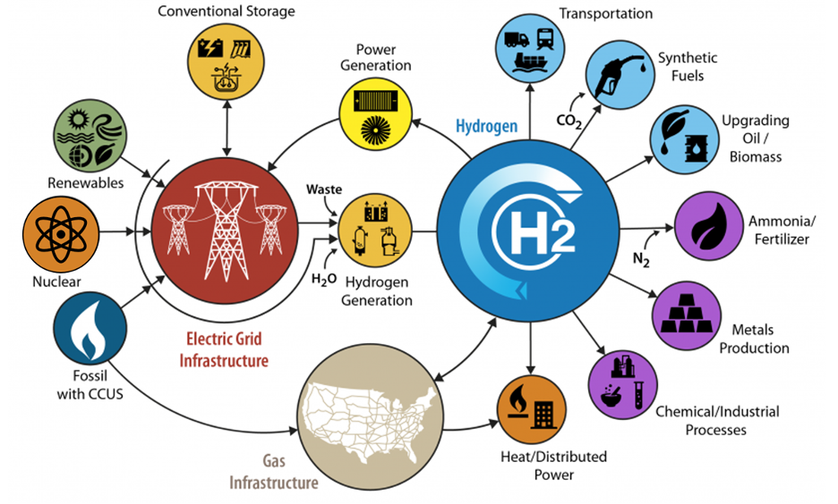
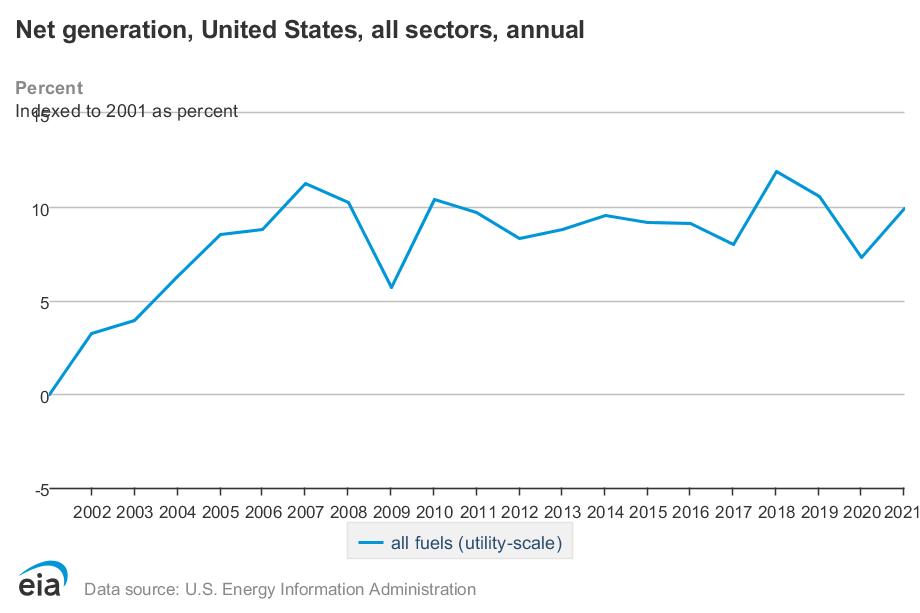
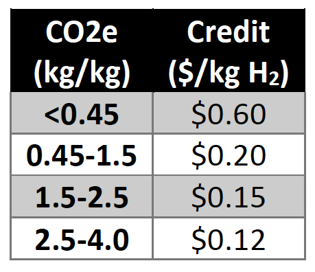
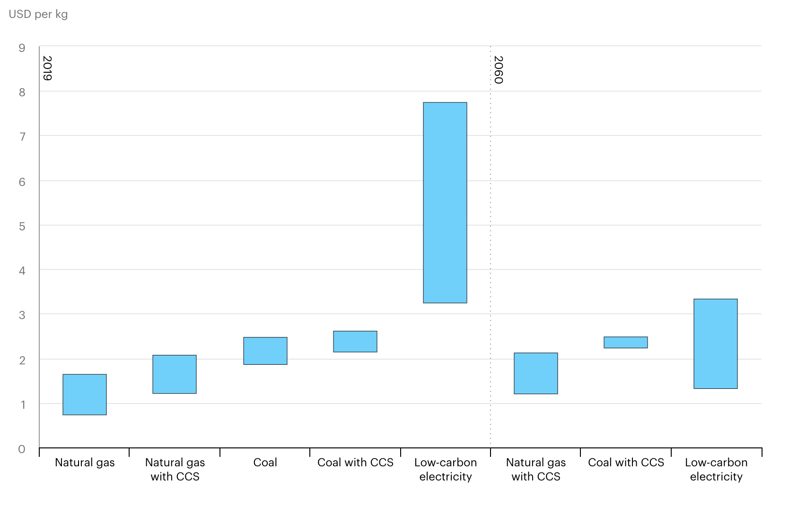

As if on cue, an opinion article in last week’s Sunday New York Times caught my eye. The title “ A Huge, Uncharted Experiment on the U.S. Economy Is About to Begin ” was all it took. I’m intrigued! ‘Experimental economics’ seems like a significant improvement from economists’ typical post hoc models.
The article was written by Robinson Meyer, a staff writer at The Atlantic who can be best described as a science gadfly (in the positive Socratic sense of that word!). Educationally, he’s a music major turned climate reporter and currently a fellow in ‘energy policy’ at the University of Chicago. So he’s taken much more Creative Writing than I have (as a scientist) and has a larger bullhorn. I concluded that it was an article worth reading.
He opened with the following:
If you want to understand the immense windfall the Biden administration is about to bestow on green industries, take a look at hydrogen. Engineers still aren’t exactly sure what role the gas will play in a climate-friendly economy, but they’re pretty sure that (contra the ridicule in “ Glass Onion ” ) it will be useful for something. We might burn it to generate heat in factories, for instance, or use it to make high-tech chemicals.
And thanks to three laws Congress passed over the past two years — the bipartisan infrastructure law, the CHIPS and Science Act and the climate-focused Inflation Reduction Act — the industry will be very well taken care of. Over the next decade, the government is going to invest $8 billion in hydrogen “hubs” across the country, special zones where companies, universities and local governments can build the machinery and expertise that the new industry needs. Other hydrogen projects will qualify for a $10 billion pot of money in the Inflation Reduction Act or $1.5 billion in the infrastructure bill. Still others could draw from a new $6.3 billion program that will help industrial firms develop financially risky demonstration projects.
So, in Mr. Meyer’s world, an “experiment” is when we don’t know beforehand whether something will work out as planned. I have a different perspective. A worthwhile scientific experiment should never ‘work out as planned’ because it is designed to answer a question where the answer isn’t already known! With the use of phrases like “immense windfall”, “very well taken care of”, and “financially risky”, he telegraphs his position that hydrogen is a waste of taxpayer dollars. Granted, it’s an “opinion” piece, so he’s expected to take a stand and not feign impartiality, so I’m cutting him some slack.
[In case you’re as naive as I am on the note, I got this from a regular reader explaining the Glass Onion reference: “A billionaire (played by Ed Norton) has “invented” a form of hydrogen that he is sure will save the world, and all of his inner circle knows it’s dangerous. Silly murder mystery hijinks ensure, and then his private island is destroyed by hydrogen explosions.”]
The rest of the article serves as a vehicle for self-righteous criticism of an earnest attempt, within current political constraints, to restore domestic manufacturing and shift our energy sources from geologic carbon. Sadly, there’s not an ‘experiment’ per se (at least not a well-controlled scientific one) to be found. Instead, the author’s major thrust appears to be that the bills didn’t build much flexibility for subsequent administration, so there may be limited options for mid-course corrections. That may be a feature, not a bug, in today's climate.
Mr. Meyer and I align on many aspects, mainly:
[W]e have underestimated just how hard decarbonization will be. One of the most cherished and widely held ideas in climate activism is that we could have solved climate change by now if only we’d had the “political will.”…Mr. Biden and his successors will discover that decarbonization is an inherently difficult and complex societal challenge that cannot be solved with money alone.
Amen. [Confirmation bias at work!]
In response to Mr. Meyer’s opening, I would like to understand how this massive pot of money is being spent ( not ‘invested’! Give me a break.) So I figure it’s worth looking at hydrogen in the context of the three major bills passed in the 117th Congress. The regional hydrogen “hubs” were funded by the $8B in the Infrastructure bill, and, rolling out the funding announcement , the DOE provided the following graphic from a related initiative, the H2@Scale project, launched in 2016 (I think).

All of the arrows make sense from a process and mass flow perspective—electricity can undoubtedly produce hydrogen through water electrolysis, fossil sources already create pipeline hydrogen, etc. In addition, hydrogen has many applications currently fulfilled by geologic carbon, like fertilizer production from atmospheric nitrogen. I wish that DOE chose to illustrate the system as a pro forma Sankey diagram, showing the size of possible flows from each source to each use, but this is what we have. [As a niggling point, none of these chemicals are “high-tech”, Mr. Meyer!]
Despite its origins at DOE, this diagram fails thermodynamics—Each arrow must represent an energy loss (to conclude otherwise would violate the Second Law). And there are a lot of arrows! Are the losses acceptable? Let's see: Suppose we use grid electricity to generate hydrogen and then use the hydrogen (via the bright yellow circle) to put electricity back on the grid. Energy is inevitably lost going through that cycle, and this energy cannot be used for other purposes. If (as pictured) fuel cells or turbines were used to generate electricity from pipeline hydrogen, losses would be 50% to 70% using today's technologies. Essentially, it's moving electrons into and out of chemical storage. From a functional viewpoint, it's a terrible battery. My guidance: "Omit needless conversions. 1 "
Further, the “electric grid” is not an underutilized resource possessing unlimited carbon-free potential, people! As I’ve stated several times, electric power cannot be stored at scale and must be generated on demand. Variable demand sometimes requires energy from geologic carbon—it can’t all be “green” all the tiime! The gold circle at the upper right (“conventional storage”) might be invoked, but today, it is aspirational at best. Plus, the demands for “clean” electricity to power (for example) automobiles in California will likely outweigh the push to generate hydrogen. And we haven’t been expanding generation capacity nearly fast enough:

The U. S. grid hasn’t supplied more power for at least the past 15 years, so the demands of a “hydrogen economy” (while electrifying everything that moves) will be a massive barrier to implementation. It is solvable with money but will also generate more litigation over high-voltage lines .
That having been said, if there are ways to remove hydrogen from waste streams or to generate pipeline hydrogen economically from renewable electricity when supply exceeds demand, it may be worthwhile. The legislative act of Government putting a stake in the ground (even an $8B stake) might be sufficient to push technologies more quickly to the tipping point. It’s a lot of money, but still only 3% of the annual Defense budget!
What about the other bills?
Well, I didn’t find anything substantial in the CHIPS legislation. There are only four instances of the word ‘hydrogen’ in the bill, and they are part of recommendations rather than mandates, so I’m going to assume that it’s just lip service. The Inflation Reduction Act, on the other hand, has some pretty juicy tax credits for “clean hydrogen” production.
But the value of “clean” hydrogen depends on how “clean” it is! The legislation prescribes a progressive credit indexed to the number of CO2 equivalents the process emits. Here’s a table:

Is this enough to encourage another energy transition to a Hydrogen Economy? Cost engineering is paramount, so we need to know where we’re starting from. The IEA (International Energy Agency) has weighed in , providing the following chart for the “levelized cost of hydrogen”.

So, as of today, the cheapest approach to produce pipeline hydrogen is to use natural gas through a process known as steam methane reforming (SMR). However, the prices seem out of whack: Hydrogen at the pump in California is around $20 per kilogram, making it one of the more expensive choices.
While the added cost of about $0.50 per kg for CCS and the projected trends might seem believable, the numbers appear to assume a carbon market that raises the cost of stored carbon from $20-$35/ton to over $200/ton in 2060—and it’s got to be kept stored forever. Unfortunately, IEA hasn’t been entirely transparent—the source of the primary data and the assumptions needed to draw this chart are unavailable outside the figure.
We can still look at fundamental chemistry. SMR without CCS generates a minimum of 5.5 kg CO2 per kg H2, so there’s no credit for simply putting hydrogen in pipelines, that’s tentatively a good thing. Modeled emissions are higher, reportedly 9.4 kg/kg based on the legislatively approved GREET emissions model . So, the implicit price on CO2 capture in SMR is just over $60 per metric ton if done with >95% capture efficiency. But since there isn’t a carbon market, the taxpayers foot the bill. It seems heavy handed.
I’m deep in the weeds now, so I will stop digging (mixed metaphor, sorry). But, I do tend to agree with Mr. Meyer that the entire process hasn’t been thought through. For example, one could envision a “clean hydrogen” facility associated with a conventional gas well. If it used SMR to produce pipeline hydrogen instead of natural gas, employed carbon capture, and returned carbon dioxide to the original well before capping it, it would be the functional equivalent of a hydrogen well. Can those additional steps be done for less than $60/ton of CO2? Not today.
Mr. Meyer ends his article: “[Future lawmakers] cannot assume that everything about the coming climate boom will work out in the end. More than just the country’s fate depends on it.”
Amen to that as well.
Apologies to Strunk & White .